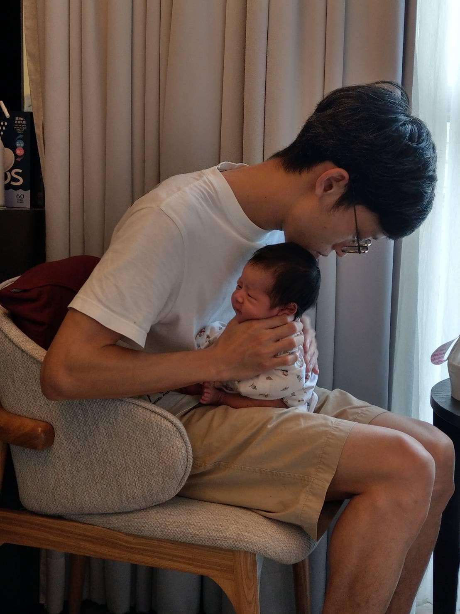

誒？#尾椎痛 不調尾椎？！
誒？#尾椎痛 不調尾椎？！
尾椎，與薦椎、髂骨構成骨盆，也與骨盆底肌相連，與核心肌群有著密切的互動關係。痛處，未必就是病根，整體結構都需要納入評估與考量。
今天來了一位產後一個月的媽媽，生產後開始尾椎疼痛，按不到特定痛點，但就是無法很端正的坐著，需要重心左右挪移才能避開那個痠痛感，坐著起身也會有一股無力酸軟需攙扶的症狀。
透過脈診與觸診評估，並沒有典型的骨盆底肌內傷抑制，觸診尾椎也是很正常，沒有明顯的側偏或旋轉。🧐🧐🧐
最後，在整體評估腰椎與骨盆的關係時找到問題：薦髂關節活動失能與過度前凹後翹的腰薦椎關係，造成了這次尾椎的疼痛不適。
當然豎脊肌與臀肌的抑制、代償與牽連也是必然可見的影響因子之一。
診斷出來後，治療方法採取徒手與針灸併用，修復了豎脊肌的損傷與功能抑制，也校正骨盆的關節活動功能，雙管齊下，力求最有效率的方式達到更全面的治療。
最後請這位媽媽嘗試坐上診所裡各種軟硬度的不一的椅子、床，總算可以好好的坐著😊😊😊
疼痛處未必就是病根處，這是在面對疼痛處置上的基本起手式，身體各種軟組織、硬組織相互聯繫合為一體，相互牽連、抑制與代償的關係都必須仔細探查，才能事半功倍，提升診療效率，把節省下來的時間用來陪伴最可愛的寶寶👶👼🍼👩🍼👨🍼
#嗝嗝嗝
#光陰似箭歲月催人老🥲🥲🥲
太初中醫診所 東門中醫
中醫師 黃彥鈞
